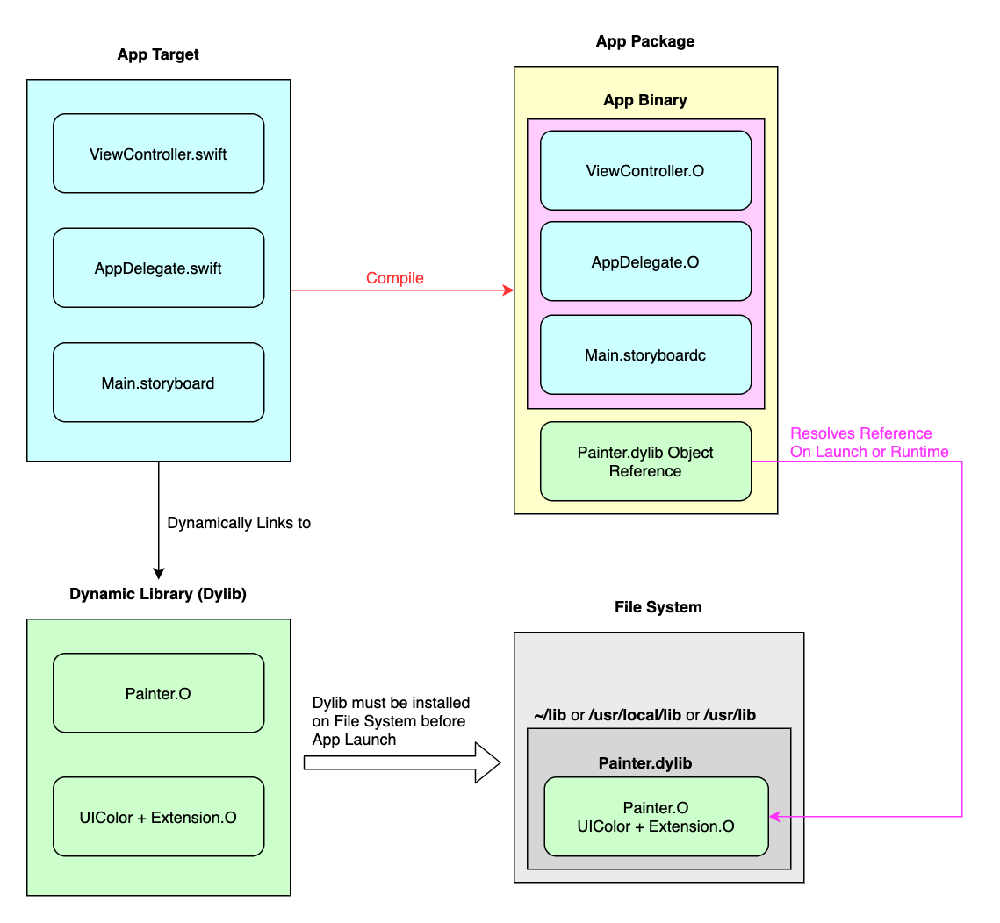
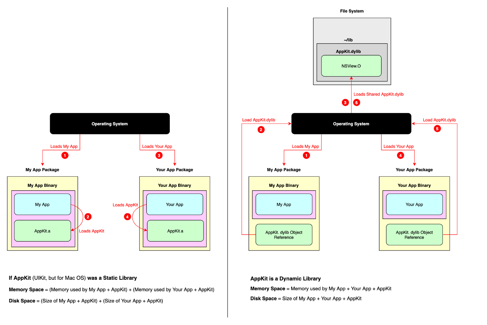
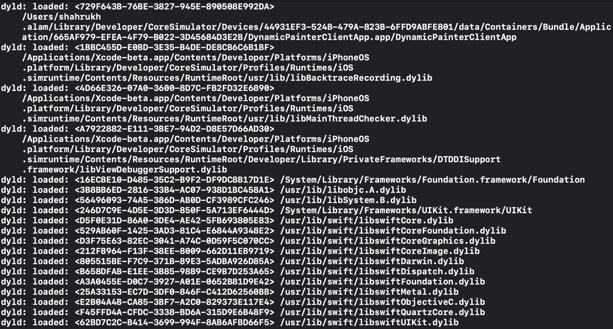

How Jesse Pinkman Cracked Dynamic Library in iOS (Part 1)
Are you Duplicating a piece of code for a particular functionality across multiple Apps? Do you find it difficult to fix a bug in all those places? If Yes, then Dynamic Library is an answer to your problems.
Breaking Bad Meth Van, Courtesy: Artstation
This Article will be in the form of a questionnaire about Dynamic Library in iOS between Jesse Pinkman & Heisenberg, fictional characters from the epic TV Series Breaking Bad. Those who haven't watched it, Walter White (aka Heisenberg) is like a mentor to Jesse Pinkman, but for all the unconventional things.
Jesse: Yo, knock knock!
Heisenberg: Who is there?
Jesse: It’s You, Bich 🤣 (if you remember “I am the one who knocks”)*
Heisenberg: Haha, Say my Name! 😎
Jesse: Yo, just kidding. Should we start?
Heisenberg: Yeah, we should. I don’t have much time left anyway 🤢
Jesse: What’s a Library, let alone Dynamic?
Heisenberg: Please check out Static Library in iOS about Library & Static Linking before you continue.
Jesse: Okay, got it. Now, How Dynamic Library is different from it’s Static Counterpart?
Heisenberg: The key differences between Static & Dynamic Libraries (Dylib) are:
Linking
Static
- When an app is linked with a static library, the library code that the app uses is directly copied to the generated App Executable by Static Linker.
App using static libraries, Courtesy: Apple
Dynamic
- When an app is using a dynamic library, only the References (rather Names to be precise) of the library is placed in the App Executable by Static Linker.
- Actual linking takes place at launch time or at run time by Dynamic Linker, when both app executable and dynamic library are placed in the memory.

App using dynamic libraries, Courtesy: Apple
Flow diagram explaining dynamic linking
Launch Times and Memory Footprints
Static
- As the library code gets copied directly to the App Executable, linking many static libraries into an app produces large app executable file.
- Applications with large executables suffer from slow launch times and large memory footprints.
Dynamic (aka Dynamically Linked Libraries or DLL)
- It’s code is loaded (and linked) into an app’s address space when it’s actually needed, either at launch time or at run time.
- Run time Linking offers faster launch times & less memory footprints.
Sharing
Static
- Let’s say some improvements were added in the version 1.0.1 of Static Library from 1.0.0
- Let’s say latest app version is 1.0 which will have the code of Static Library version 1.0.0
- Now, in order to gain access to the improved functionality, the app developers must recompile & relink the object files of the app with the new version 1.0.1 of the library, also they would have to release a new version (say 1.1) of the app.
- Also the app users need to update their app with the latest version 1.1
- So, to keep an app updated with the latest functionalities, some work is needed from both the app developers & the end users.
Dynamic (aka Dynamic Shared Libraries or DSL):
- Several programs(Apps) use a single shared copy of an executable dynamic library module. For example, a single copy of AppKit (UIKit, but for Mac OS) resides on the System & all the Apps point to the same.
- This significantly reduces the size of the app executable, saving memory and disk space.
- App load time will be further reduced if the shared library code is already present in memory.
- Programs can benefit from improvements to the dynamic libraries they use automatically without requiring app developers to recompile the apps. This is how apps that use Cocoa technologies benefit from improvements to Mac OS as all system libraries in Mac OS are dynamic.
- When I say recompile (from the previous point), I mean let’s say we have an App version 1.0 using AppKit dynamic library version 1.0.0 Our App executable keeps a reference (just the Name) to the AppKit. Now, we got an OS update & AppKit version is bumped to 1.0.1 on the File System.
Dynamic Loader sees our App executable & finds the name AppKit to load. As long as AppKit is present (and is compatible, which it will be in most cases) in the File System, Dynamic Loader will be able to load it, the version of AppKit doesn’t matter. We don’t need to do anything extra & we get the new version 1.0.1 for free.
Flow diagram explaining static vs dynamic load
Run time Speed
Programs that use dynamic libraries are slower at run time than those using statically-linked libraries, especially when app is trying to link the dynamic library module at run time.
This is a fair trade off for faster launch times & less memory footprints.
Compatibility
Static
- In statically-linked programs, all code is contained in a single executable module. Therefore, they never run into compatibility issues.
Dynamic
- One issue that developers must keep in mind when developing dynamic libraries is maintaining compatibility with client apps as a library is updated.
Let’s say Mac Apps AdobePhotoshop version 1.0 & AdobeIllustrator version 1.0 both use the shared dynamic library AdobeCore version 1.0.0
Now, Adobe developers decide to release a new version 1.0.1 for AdobeCore alone.
They have to do a backward compatibility check for AdobePhotoshop 1.0 & AdobeIllustrator 1.0 as both the apps will now be pointing to AdobeCore 1.0.1, if any compatibility issue arises Dynamic Loader will terminate the process (app) at launch time or run time. - Because a library can be updated without the knowledge of the client-app’s developer, the app must be able to use the new version of the library without changes to its code. To that end, the library’s API should not change.
- However, there are times when improvements require API changes. In that case, the previous version of the library must remain in the user’s computer for the client app to run properly.
Continuing the previous example, Adobe developers can release AdobeCore 1.0.1 keeping AdobeCore 1.0.0 also in the System, so that AdobePhotoshop 1.0 & AdobeIllustrator 1.0 can still use AdobeCore 1.0.0 without crashing & latest AdobePhotoshop (say 1.1) & AdobeIllustrator (say 1.1) can point to AdobeCore 1.0.1 benefitting from the improvements. - A new compiler release may change a library, applications might have to be reworked to be made compatible with the new version of the library.
Jesse: In the previous section, it was mentioned that standard locations for dynamic library are ~/lib, /usr/local/lib & /usr/lib. Show me 😎
Heisenberg: Okay, I will show few dylibs location on my system, it might be different on your file system.
- Core Swift libraries, used by our Swift Apps are in Library
Swift Dynamic libaries in Finder
- Helper Swift libraries, used by swiftc (Swift Compiler) & Xcode are in User Library
Swift helper libaries in Finder
- Locations of all the dylibs used by your App
You can use Logging Dynamic Loader Events Environment Variables on Xcode -> Active Scheme -> Edit Scheme like this:
Xcode Dylib print libraries Settings
It will give an output like this for an empty single view iOS App on Debugger console:
Xcode Dylib print libraries output
Jesse: In the previous section, it was mentioned that Dynamic Libraries are loaded at launch time or run time. What’s the difference between them?
Heisenberg: I appreciate how you are trying to be a good learner 🤪
Launch Time
When you tap on that App Icon in your iPhone, app binary gets loaded onto memory along with the dynamic libraries required only for showing the launch screen & then the first screen. It’s the time between the main function call of the executable & the return true from didFinishLaunchingWithOptions of the AppDelegate. App state transitions from terminated to active during this time.
Run Time
It’s the time when the app is actually running & user is interacting with it, dynamic libraries can also be loaded during this time based on the need of a particular module. It’s post Launch Time, the time between the return true from didFinishLaunchingWithOptions & the applicationWillTerminate of the AppDelegate. App state transitions from active to terminated post this time.
Jesse: Okay, can we now create a Dynamic Library for iOS?
Heisenberg: Actually, true Dynamic Libraries are not supported in iOS 🤣
Jesse: Then, why the fck were you telling me all this, and what is this true Dynamic Library now?*
Heisenberg: I understand that it’s frustrating, but you can’t make Meth without knowing little bit of Periodic table stuff.
And we will meet with rest of your curiosity in the next cracking session (Part 2). I know that I am leaving you on a cliffhanger & it’s not fair, but neither is Life 😜
That’s enough for now, until next time…
Thanks for reading 🚀
If you liked this article, please share it with your friends and fellow iOS Developers 🙏

Share this article on Twitter

Share this article on Linkedin